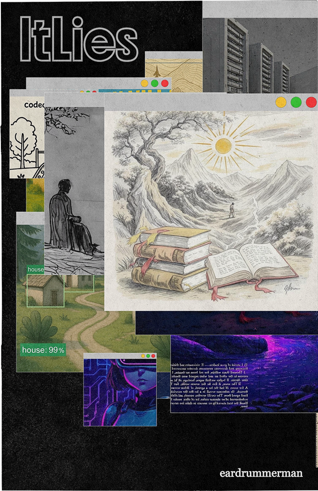

ItLies
3.0
Track Artist
eardrummerman
https://manaswimishra.com/
Bio
eardrummerman aka Manaswi Mishra is a PhD researcher in the Opera of the Future group at the MIT Media Lab. His research explores strategies and frameworks for a new creative age of composing, performing and learning music using A.I. centered around bespoke human and cultural intent. Manaswi’s research on creating novel A.I. Lutherie can be seen in the development and performance of Operas like VALIS (2023), FLOW Symphony (2024, premiered in Seoul Arts Center) and exhibitions across the world (IFA Stuttgart ‘24, Burning Man ‘23, Boston tech poetics, Algorave India, Ljubljana Biennale 2025, Harvard Kirkland Art Gallery ‘24 etc.). His work on AI music performance and copyright law has been published and exhibited in the MIT Press, Harvard Tech Review, Washington Post, Boston Globe, Audio Developer Conference, Basel Academy of Art and Design FHNW, Conferences of Computational Creativity, ISEA Brisbane, CVPR 2024, Copyright Society 2023, Bloomberg Law etc. He also holds an MS in Media Arts and Sciences (MIT, 2021), MS in music technology (UPF, Barcelona) and a BTech (IITM, India). He is the founding instigator of the Music Tech Community in India organizing curricula, workshops, hackathons, conferences and community events across India.
Zine Artist
ikecj
https://www.instagram.com/timeblurcollective
Bio
Mallikarjun is a technocrat from Bangalore, with a graduate degree in Electronics and Communication Engineering. He works primarily with Electronics, Signal Processing and Computer Graphics, which is applied in interdisciplinary fields such as Music, Software arts and Data Visualization. He loves being in the complexity of computer algorithms to generate beautiful artforms. The passion for making art lead to starting Timeblur Studio in 2015 as a Creative Technologist. Now exploring the depths of Genrative AI solutions at Amazon as a Design Technologist.
Process
eardrummerman: I have been seeking out the values of why I want to make music in an age of AI algorithms that compose pastiche. I took a poem I wrote in 2023, an angst against growing low effort, infinite synthesized media manipulation of manufacturing consent that we are snowballing towards. In this piece, I decided to compose using a bespoke setup where I create text to audio samples, audio to audio samples and also sample manipulations using strudel.cc all shaping material created from my voice.